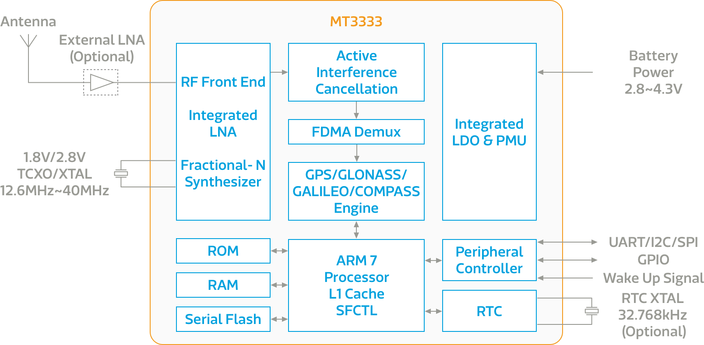

MT3333
概述
聯發科技 MT3333 是多合一的多星系衛星定位系統單晶片（SoC），能廣泛適用於行動通訊、車用、定時、個人防盜追蹤系統、無人飛行機與工業應用。MT3333 具備高追蹤精準度，能在擁擠的城市環境中提供更好的表現。
MT3333 僅僅只需九個被動外部元件，同時與聯發科技 MT3337 和 MT3339 的腳位相容，使您能有彈性的設計一系列不同層級的裝置，並減少重複的硬體開發工作。
主要特色
-
追蹤感度：-165dBm
-
持續追蹤功耗：5~19mA
-
支援 GPS, GLONASS, Beidou, Galileo, QZSS 與 SBAS
-
具備聯發科技 AlwaysLocate™ 技術，可降低功耗
MT3333 內建的 LNA 可達到 2.2 dB 的 total receiver chain NF，所以可以不需要外接的 LNA 元件。另外，透過晶片上的 image-rejection mixer，您也不需要外掛 SAW filter。
MT3333 在提供持續定位的同時，也提供最低的功耗。透過數個進階功能如 AlwaysLocate™、EASY™、HotStill™、EPO™ 以及日誌功能，MT3333 適用於各種可攜帶式裝置應用，如數位相機、行動電話、可攜式媒體播放器與遊戲裝置。
